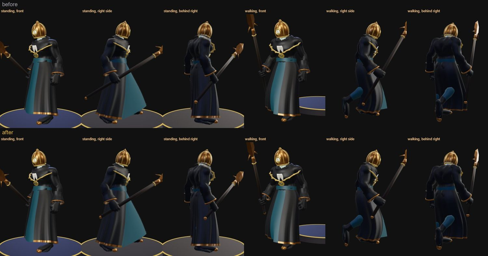
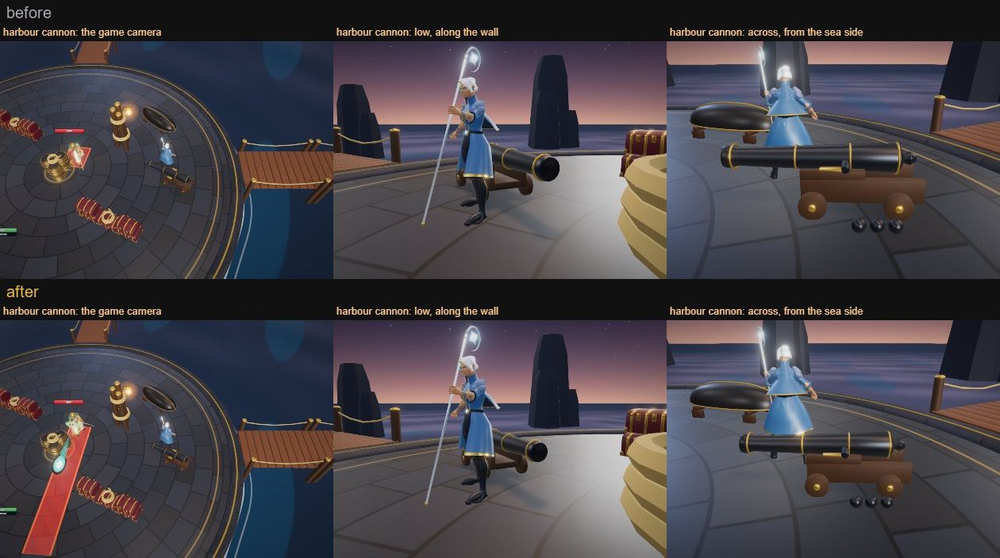
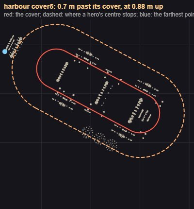
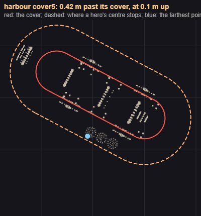

The Blender round of the model review
2026-11-16 · the two rebuilds the model review of the Climb, the bosses and the arenas listed
(docs/models/review/blender-list.md), done by the heroes' review as the one Blender agent. The third item (the cream that
blooms white on seven of the Climb's people) waits on you and was not touched. Not pushed, not deployed.
1. The Tide Judge's glaive
At rest the haft ran 0.6 of its length back past his hand, through the gown behind his right hip. It now starts 0.3 behind the hand
(blender/tower/sea/judge.py), its bronze end with it; the blade end is as it was. Rebuilt with blender/tower/build.py -- sea.judge:
the same 19,692 triangles, 11,478 vertices and 65 bones (names, order and bind matrices identical); 403 → 399 KB. The skin texture now
has the pack's painted shorts covered, as every model built since the touches round does (hidden under his gown either way).

2. The harbour's two cannons
A 3.2 m gun on a 2.7 m wall: its back stood 0.7 m past the wall 0.9 m up, where a hero stopped by the wall stands in it. Now built at
0.9 of the old size (blender/arenas/real/harbour.py, cannons()): 0.42 m past the wall at most, and that at
0.1 m up (the cannonballs on the floor), inside the 0.5 m the game keeps a hero off. Same triangles (92,834), 848 → 847 KB; the walls,
the cover and the fight are unchanged.


pipeline/tools/arena-fit.js)